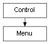

class cymel.ui.menu.Menu¶

-
class
cymel.ui.menu.Menu¶ ベースクラス:
cymel.ui.control.Controlmel UI の menu ラッパークラス。
withで setParent が行える。Methods:
UICMDchild([idxOrPath])階層下のメニューアイテムを得る。 childNames()子のメニューアイテム名リストを得る。 children()子のメニューアイテムのリストを得る。 clear()子のメニューアイテムを全て削除する。 getCurrent()カレントペアレントメニューを得る。 makeCurrent()これをカレントペアレントメニューにする。 numChildren()メニューアイテム数を得る。 pop()カレントペアレントメニューを一つ上に移動させる。 Methods Details:
-
UICMD()¶
-
clear()¶ 子のメニューアイテムを全て削除する。
-
makeCurrent()¶ これをカレントペアレントメニューにする。
-
static
pop()¶ カレントペアレントメニューを一つ上に移動させる。
-